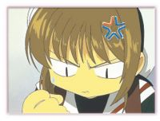

Sakura Card Captor
 De: La Frikipedia, la enciclopedia extremadamente seria.
De: La Frikipedia, la enciclopedia extremadamente seria.
| De la serie anime para todos:
|
| Sakura Card Captor
|
| 
|
| Sakura al leer este articulo
|
|
| Género:
|
Yuri, Yaoi
|
| Episodios:
|
70
|
| Autor del manga:
|
CLAMP
|
| Publicación:
|
1996
|
| Publicado en:
|
CLAMP
|
| Director del anime:
|
CLAMP
|
| Transmitido en:
|
fansubs y traducido al español
|
| Ovas:
|
3 y otra de la rata amarilla violadora
|
| Películas:
|
2
|
| Notas
|
Su secuela es Tsubasa Reservoir Chronicle
|
Sakura Card Captor (en español, Sakura Cazadora de Cuero o Sakura la Niña Viciosa) es una serie anime infantil creada en 2011 por el grandioso artista japonés Mekomo Tukaka.
La serie narra las aventuras de una niña con problemas psicológicos, un amante imaginario con forma de rata y una amiga lesbiana aficionada a grabarla en situaciones...explícitas.
Historia Estúpida

¡No! ¡Esta no es!
Sakura Kinomoto es una niña macuarra de 10 anosaños, con un padre alcohólico que abusa de ella, un hermano travesti y una madre muerta por por sobredosis años atrás. Sakura va al instituto de su pueblucho donde tiene muchos amigos con los que intimar, y donde practica su deporte favorito, el strip-dance la gimnasia rítmica nudista.
Un día, Sakura toma demasiadas pastis después del colegio, y cuando llega a casa, cree ver y oír luces y extraños murmullos. Por ello baja al sótano donde su padre guarda sus herramientas de sadomasoquismo, en busca de un consolador para distraerse, en lugar de hacer los deberes. Sin embargo se encuentra con una revista porno. Sakura coge la primera, y excitada, pronuncia su nombre. De inmediato las cartas despiertan y salen volando de la casa, y de la revista porno aparece una rata imaginaria enviada por Chuck Norris desde el hiperespacio que le dice a Sakura que debe atrapar a las PornoCartas, unas cartas superpoderosas y superviciosas, utilizando un Consolador Extensible Mágico (comprado en Bazar Asia), y con la ayuda de su amiga Tomoyo, una lesbiana reprimida y de Shaoran, un chino extraño que sale después.
Las PornoCartas del Payaso
¡Que no! ¡Les dije no es esta!
Sakura tiene que atrapar un total de 52 PornoCartas. Cuando lo consiga, será una maestra en el arte de la magia y el sexo y podrá seducir a cualquier hombre y dominar el mundo. Por desgracia, éstas tienen formas indefinidas, y debe localizarlas con su radar mágico (obsequio de Bulma) de cartas no aptas para menores, y regresar las a su forma original.
Personajes
- Sakura Kinomoto: Protagonista de la serie, una niña de 10 años demasiado plana para su edad con tendencias sexuales extrañas e indefinidas, que gusta interactuar principalmente con su mejor
zorra amiga Tomoyo (tomas tu) de quien hablaremos mas abajo, cuando encuentra las pornocartas y a la rata voladora imaginaria su lado ninfómano incrementa su actividad en un 1400% haciendo imposible para ella poder pasar mas de 3 segundos sin alguna actividad sexual, razón por la cual la rata siempre la acompaña ya que cuando debe sacarse el consolador de la vagina la rata lo substituye gracias a la ayuda de la carta pene (ya que sin esta le mide 2 centímetros y no folla ni a una mosquita en celo)
- Touya Kinomoto: Hermano mayor de Sakura, un chico adolescente común y corriente que pasaba el día follando con sus compañeras de instituto y eventualmente satisfaciéndole las necesidades hormonales a su hermana (razón por la cual follaba un día y descansaba otro) hasta que se hartó de tanta cajeta y se volvió bisexual (nuestros expertos investigan (o investigaban) sin descanso la causa de ese terrible padecimiento para evitar su futura aparición, sin embargo nuestras investigaciones fueron interrumpidas por la ruda intromisión de un tipo vestido de saco con alas de plástico que se hacia llamar "El juez Yue" y que secuestró a Touya que tanto trabajo nos había costado golpear y amordazar, amarrarlo no, incluso él mismo puso las manos; por lo que ahora la investigación se encuentra estancada. A los pocos días se lo vio
follando charlando amigablemente de sexo con una de las PornoCartas, la carta de la Bola Espejada

-Sakura, estoy encantada que me invites a tu casa a "
dormir"- Nadeshiko Kinomoto: Madre de Touya y Sakura, se emparejó con Fujitaka cuando lo conoció follando en un rave patrocinado por su prima y amante Sodomi, vivieron juntos unos años y de ahi salieron Sakura y Touya (probablemente por eso salieron como salieron), después del nacimiento de Sakura se fueron a festejar a otro rave de los de Sodomi en el cual Nadeshiko murío por sobredosis
- Fujitaka Kinomoto: padre alcohólico y pervertido de Sakura, desde que nadeshiko murío se la pasaba en los bares japoneses besándose con quien se le pusiera en el camino. Nadie sabe en que trabaja, de que vive o de donde saca el dinero para mantener dos hijos, casa y coche sin haber abierto un puto libro en su vida.
- Bruno Díaz: No, la verdad no pertenece a esta serie xD
- Yugi Muto: Al igual que Sakura,él también usa cartas, pero es otro infiltrado al igual que Batman :-S
- Tomoyo Daidouji:
Lesbiana, Mejor amiga y confidente de las mas oscuras perversiones de Sakura, tomoyo es una niña rica con un padre alcohólico desaparecido y una madre pedófila ninfómana que pasa el día follandosela a ella (cuando Sakura no la está ocupando claro) o a una de las 40 mucamas que contrató para este fin y pasan el día deambulando por la mansión vestidas en traje de puta mucama francesa y esperando a que se las cepille la señora o la hija, ninfómana declarada (aunque no al grado de Sakura) a veces le pide a Kero para "jugar" con el y se rumora que alguna vez se cepilló al hermano de Sakura (si, ELLA se lo cepilló a EL)
- Sodomi Daidouji (ah, que nombrecito que escogió la señora): Madre de Tomoyo y amante de Nadeshiko hasta que murió por sobredosis en una de sus raves, como su nombre lo indica le encanta que la sodomizen o sodomizar a cuanto culo encuentra en su camino, es la presidenta de una fabrica de juguetes eróticos (de ahí viene su fortuna ya que en ese pueblo todos son muy pervertidos) y eventualmente se dedica a "jugar" con Sakura o Tomoyo, algunas veces haciendo tríos o incluso orgías con las mucamas de la casa. Se rumora que el espíritu de Nadeshiko reside dentro de ella y por eso su libido se duplica
-"Tomoyo, Sakura, vayan afuera que ya me cambio y empezamos, mientras sáquense todo"
- Shaoran Li: Chino putito que aparece en japón cuando por alguna misteriosa razón se entera de que las cartas andan sueltas (se dice que la carta número 53 se le metió por el culo y le gustó tanto que no se la quiso sacar y busca las demás cartas para también meterselas por ahí), tiene una prima
que se cae de buena la infeliz zorra bastante linda que siempre lo acompaña y que quiere con el ya que se lo ha dicho en infinidad de ocasiones, le ha metido mano, lo ha intentado violar en 15 ocasiones distintas sin conseguir éxito alguno, prefiriendo él obsequiarle pasteles y flores al tal yukito (por lo cual nuestro grupo e expertos apunta a que es maricón, bisexual o bien "o rey do travetis" aunque este ultimo puesto es muy discutido en esta serie)
- Meiling Li: La
puta más famosa de toda la China Prima de Shaoran que insiste en que él es su esclavo sexual prometido y trata de cepillárselo a cualquier precio, aunque al no tener éxito acude a consolarse con Sakura, Tomoyo o las dos para que también le den nuevas ideas de como violarlo sin que se le escape. Desde pequeña estudió artes sexuales y se sabe el frikisutra, el wikisutra y el CHUCKUSUTRA de memoria realizando cualquier posición de cualquiera de estos textos con precisión milimétrica y sin fallar, ademas de que si le describes la pose ella la hace sin mayor dificultad, como su compañero en estas enseñanzas fue el chino rarito y a ella (por razones que preferimos ignorar) le encantó como lo hacía ahora se empeña en que lo hagan las 24 horas del día sin descansar
- Kerberos o Kero Butanero: Rata amarilla y vo
iladora que sale de la revista al desperdigarse las cartas por doquier, conocido por su desenfrenado gusto por lo dulce (sobre todo la lefa de Hot Coffee) , y por su inapetencia sexual, Sakura le aplica la carta pene para que le sirva de algo ya que hasta haber capturado todas las cartas es mas inútil que los pelos del culo, cuando este hecho se concreta se convierte en una especie de gato-león-gaviota de 2 metros con un miembro de 40 centímetros que Sakura aprovecha al máximo (cuando lo combina con la carta pene no puede sentarse en una semana y anda con una pinche cara de felicidad que no se le quita ni chupando limón)
- Chicharu Mihara: Amiga
putita buenorra de Sakura especializada en juguetitos eroticos, frecuentemente le calma las ansias a Sakura prestándole vibradores o esferas asiáticas (los cuales siempre le regresa derretidos, no se sabe por que razón), muestra una cierta preferencia a follar con su esclavo sexual favorito un tal Yamazaki que tiene el síndrome de diarrea verbal (cada que dice algo la caga), razón por la cual la posicion preferida de Chiharu es el 69 (porque poniendole la vagina en la boca por lo menos no le entiende a las pendejadas que dice, ademas de que tanta platica le hace efecto vibrador)
- Rika (mmm... muy rica) Sasaki: La más
putita rica de todas las amigas buenorras de Sakura que pasa de sus compañeros de clase y se dedica a follar sin descanso seducir a los maestros de la escuela (curiosamente es una de las alumnas con mejor promedio en la escuela, tendrá algo que ver?. Le encanta follar con su maestro en el colegio y todos los viajes y excursiones, el profe Tarado, (es tarado y no Terada), porque la putilla se viste de ama sado y el tipo se queda en estado de shock "-Si, profesor, quiero volver a acostarme con usted
- Naoko Yanagisawa: La tercer amiga
putaza buenorra de Sakura, es tímida y retraída, pero en la cama (o en el piso, o en el baño, o sobre una silla, o donde sea que se la estén follando) se vuelve una fiera insaciable con tendencia al sadomasoquismo, si se encuentra en periodo de celo (cosa que ocurre mas o menos cada dos horas y dura hasta que está satisfecha) violará sin piedad a la suertuda de mierda pobre victima mas cercana que encuentre, razón por la cual se encuentra siempre rodeada de una buena cantidad de chicos (y chicas) que frecuentemente presta a Sakura cuando ella no los está utilizando. Siempre la enfocan leyendo, es que le gusta repasar el kamasutra y se exita más cuando lo lee.
- Takashi Yamazaki: Un tarado que habla hasta por
el culo los codos. Chicharu lo usa de esclavo sexual y lo vive sodomizando en el baño.
-Hoy, Chicharu, vamos a practicar la pose 70 del Frikisutra, en la que todo se basa en este dedo...
- Yukito Tsukishiro: El otro rarito de la serie, un chico bastante extraño que traga como pelón de hospicio y folla (con el culo claro) como si no hubiera un mañana, es el que inicia a touya en el
extremadamente guarro intrincado camino gay y su actual pareja sexual (creemos que tuvo algo que ver con el atentado a nuestros laboratorios mientras estudiábamos a touya), Sakura queria cepillarselo pero nunca se le hizo ya que por mas que trataba no lograba que se le parara... el reloj para que se le olvidara que tenia que ir a la escuela y se quedara a follar con ella. Yukito no es mas que un pedofilo gay que siempre que veia a Sakura la invitaba "a comer" y le regalaba dulce cada vez. Ademas que la primera vez que vio a shaoran le regalo un paste (Por dios chuk)
- Yue: Un tipo raro con alas de gaviota en celo, traje de milano y el culo en coliflor, con afición por el sado, el cosplay erótico y el bondage, nunca quita la jeta de "el mundo no me merece" ni porque se esté cepillando a 15. Recientemente se declaró emo.
-Touya,me exita verte sin ropa...
- El profe
sexysor Tarada!!!: Bueno, es el esclavo sexual maestro más follado querido y multifacético de la escuela. Le gusta la pedofilia y el sado, ya que tiende a encerrarse en los recreos en el armario con la más puta de la clase, su alumna Rika y los dos se dan hasta cansarse.
-"Que lindo culito el de la Sasaki, ni me había fijado
Historia
¡¡¡La puta madre!!!¡¿No entienden que no es esta
puta Sakura?!¡Esta es
la putilla rosa que folla con Naruto!
Después de que las cartas salieran volando mientras Sakura se quedaba viendo como estúpida sin tratar de cachar ninguna (se rumora que estaba en un viaje o agotada por extrema actividad sexual) la rata amarilla le dice que o las junta todas o se volverá insensible a cualquier estimulo sexual ya que la revista venía con esa maldición incluida, antes de que la rata amarilla terminara de hablar (lo cual es muy raro porque las ratas ni son amarillas ni hablan, algunos creen que es un pokemon aun no clasificado, otros piensan que tal vez Pikachu no estaba conforme con su propia participacion en su serie y aprendio el español y se disfrazo para entrar en esta) Sakura ya había juntado sus artículos personales mas básicos (vibradores de diversos tamaños, la edición de bolsillo del frikisutra, lubricante en grandes cantidades y un látigo de 2.5 metros, cortesía de tomoyo ) y estaba lista para salir de "cacería" (carajo que con esa amenaza de por medio Sakura era capaz de ir y matar a penedector a sentones si era necesario)
Después de que obtuvo la carta "pedo vaginal" podía volar mediante el uso de esta técnica (al igual que Paris Hilton y Britney Spears) y ahí fue cuando tomoyo la vio con el telescopio ultrapotente de bolsillo que usaba para espiar a sus vecinos por las noches, al día siguiente tomoyo le exigió compartiera el secreto con ella o no la volvería a invitar a las orgías de la casa daidouji, Sakura, viéndose acorralada le confesó todo lo cual dejó a tomoyo emocionada y excitada al mismo tiempo, así que después de llamar a 5 de sus mucamas (carajo, tenia que quitarse la excitación con algo) decidió volverse la aliada de Sakura en tan importante búsqueda, diseñando le trajes de bondage y dominatriz para cada ocasión, ademas de "probar" cada carta con ella cuando la atrapaban, luego conocieron al chino raro shaoran y a su prima meilin que decidieron ayudarles a juntar las dichosas cartas (la verdadera intención de shaoran era meterselas todas por el culo y la de meilin era usarlas para poder violar a su primo las 24 horas del día sin que este pudiera hacer nada al respecto pero a los dos les falló) y cuando las obtuvieron encontraron al tipo ghei del traje barato que las quería para el (con fines aun desconocidos que preferimos seguir ignorando) y se las quizo quitar, pero al final Sakura le lanzó un chorro ácido que lo dejó medio ciego y le dio una hostia con kero (la rata amarilla) que lo dejó K.O. y ahora es su esclavo personal.
Cuando por fin obtuvieron todas las cartas y el ghei estaba sometido la rata le dijo que ahora tenia que "hacer suyas" las cartas (si, de la manera en la que están pensando) porque si no se iban a morir por falta de uso, Sakura intentó usarlas todas de un jalón con devastadores resultados (quedó desmayada 3 días y no experimentó deseo sexual alguno durante la siguiente semana, cosa que por cierto encabronó mucho a tomoyo) y la rata le dijo (a buena hora) que tenia que usarlas de una en una para que no le fuera a pasar nada (a la rata claro que ahora estaba acostumbrada a que Sakura le atendiera la urgencia y que pasada la semana tenía uno de los peores casos documentados de pelotas azules en la historia) por lo cual un tal Eriol organizaba orgias y bacanales con regularidad para que Sakura tuviera oportunidad de usarlas todas, se dice que después de esto el chino raro (shaoran) quería cepillársela pero le daba pena (por razones desconocidas, quizás la tenia del tamaño de kero, aunque su prima asegura haberle sentido una tercera pierna en el treceavo intento de violación) y siempre acababa yendo a consolarse con tomoyo (cosa que a tomoyo no le desagradaba en lo mas mínimo) hasta que se regresó a china y tuvo los suficientes para decirle a Sakura que follaran, aunque no le alcanzaron para esperarse y salió huyendo (probablemente al ver la cara de perversión que puso Sakura cuando recibió la noticia) pero Sakura, nada pendeja, lo atrapó y lo llevó a rastras al baño del aeropuerto rompiendo con él el récord de mas tiempo follando sin parar al no salir de ahí en tres días (los empleados no se atrevían a acercarse por temor a los extraños ruidos que salían de ahí).
Como ven, Naoko tiene un parecido bastante notorio con un Pokémon llamado Hoot-Hoot
Cuando por fin salieron Sakura tenia una cara de felicidad mayor que la que ponía cuando usaba al gato-león-gaviota y el chino raro había perdido 7 kilos (muérete de envidia slim fast!), había perdido el avión pero no le importaba, en cuanto a su prima estaba mas cabreada que un cachalote impotente y se lo llevó arrastrando de los cojones hasta china, o por lo menos hizo el intento ya que tomoyo se compadeció de el y les compró dos boletos mas, aun así meilin no lo soltó hasta que llegaron a su casa y su intento de violación #16 por fin tuvo éxito (si bien no califica como intento de violación ya que shaoran no opuso resistencia alguna) y pasaron el resto de la semana follando.
El Final Sorprendente
Sakura termina atrapando las 52 cartas, y con su ahora enorme poder sexual y digievoluciona a Paris Hilton. Todo el pueblo queda sometido a su hechizo y pronto emigra a América, donde se hace la dueña de la telebasura, la detienen por conducir borracha e incluso participa en una peli de miedo. Finalmente le practica una mortal felación a George Bush y consigue dominar el mundo, obligando a sus súbditos a follar las 24 horas con sus amigos, sus padres y sus abuelas. Sin embargo cuando lo está celebrando se ahoga con una pasa y muere asfixiada.
Se cree que pudo ser la madura actriz porno Carmen Sevilla la que le ofreció la pasa fatal y le robó las PornoCartas una vez muerta para resugir de sus cenizas en el cine porno español.
Autor(es):
- Ardillanegra
- Frikiman
- Azulejos
- El Sevillano
- Telasampo
- PaladinImperial
- Daikataro
- Naruto hyuga
- Karlinx
- KaZe YaShA
Frikipedia 2005-2016, Licencia
GFDL 1.2 - Extraído por FrikiLeaks